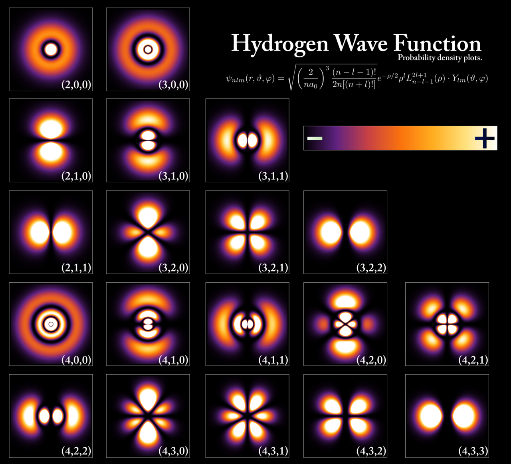

f-block (Lanthanides · Actinides)
Hydrogen
Bohr Model & Electron Shells
Historical teaching model
The rings are not electron paths. Bohr shells are useful for energy levels and electron counting, but a real atom is described by a quantum state and probability density.
Compare with a quantum probability map

Orbital Shape & Hybridization
3D probability/model surface
Atomic orbitals are volumetric isosurfaces of a calculated wavefunction; they can look narrow edge-on but are never flat sheets. Hybrid orbitals are mathematical combinations used to rationalize molecular geometry, not photographed objects.
Common Oxidation States
These are the charges this element can take in compounds — determining what bonds & reactions it prefers.
Signature Colors
How this element actually looks — as a pure substance, as its main compounds, and (for many s-block elements) in a flame test.
Chemical Bonding
Signature Reactions
Teaching schematic: atom paths and timing are not a molecular-dynamics simulation. The animation holds reactants for 0.5 s, then conserves atom counts while illustrating bond changes and observable effects.
3D Molecular Structures
Drag to rotate. Approximate reviewed geometry; ionic solids are labeled lattice fragments, not isolated molecules.
Inside the Nucleus · Isotopes · Radioactivity
Isotope
Abundance
Stability
Notes